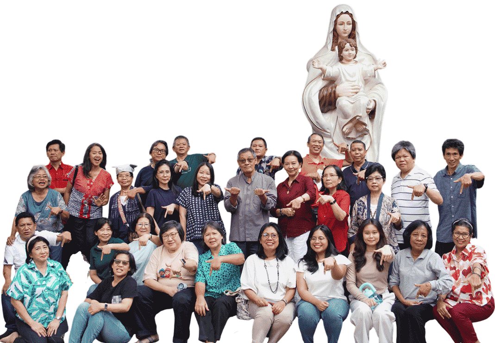

Syalom Ibu, Bapak, Sdr/i, rekan muda dan adik2 sekalian... Berikut adalah sebagian tim yang dibentuk dalam kepanitiaan Natal 2026 di Katedral Jakarta. Mohon doa untuk kelancaran dan keamanan rangkaian kegiatan Natal 2026, dimulai dari Adven, Pengakuan dosa, Misa Malam Natal, Misa Natal dan Pontifikal sampai Epifani.
Mohon "pagar doa" untuk Tim Panitia
Semoga Tuhan memberkati kita semua.
Amin.
